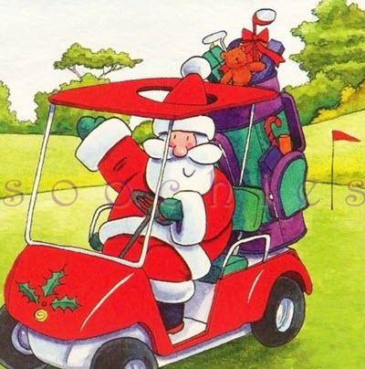

<div class="pages">
  <div data-page="565-gaveideer-fra-den-gamle-golfklub" class="page navbar-fixed toolbar-fixed" >
    <div class="navbar">
      <div class="navbar-inner">
        <div class="left">
          <a href="#" class="link back icon-only"><i class="icon icon-back"></i></a>
          <!-- <a href="#" class="back link icon-only"><i class="icon icon-back"></i></a> -->
        </div>
        <div class="center">Gaveidéer fra "Den Gamle Golfklub"</div>
        <!-- <div class="right"></div> -->
        <div class="right">
        </div>
      </div>
    </div>
    <div class="page-content" style="padding-top:45px;">
       <div class="content-block">
          <p><b>Gaveidéer fra "Den Gamle Golfklub"</b></p>
          <center></center>
          <p><b>Gavekort, greenfeebilletter eller Lær Golf På 4 Uger</b><br />
            I golfklubben kan du købe ovenstående gaver. Send en mail, ring eller besøg os i vores åbningstider, så kan du selv hente gaven eller vi kan sende den til dig.
             <br /><br />
              * Gavekort kan udstedes på et hvilket som helst beløb<br/>
              * Greenfeebilletter til brug i 2017 kan købes til julepris for kr. 300 pr. stk.<br/>
              * Lær Golf på 4 Uger kursus kun kr. 600 pr. person
             <br /><br />
            <b>Shoppen holder åben den 10, 11, 17 og 18. december</b><br />
            Ulrik holder åbent mellem 10 og 14 de pågældende dage, så der har du mulighed for at få fat i den helt rigtige julegave. Læs mere HER</p>
        </div>
    </div>
    </div>
    </div>
  </div>
</div>
